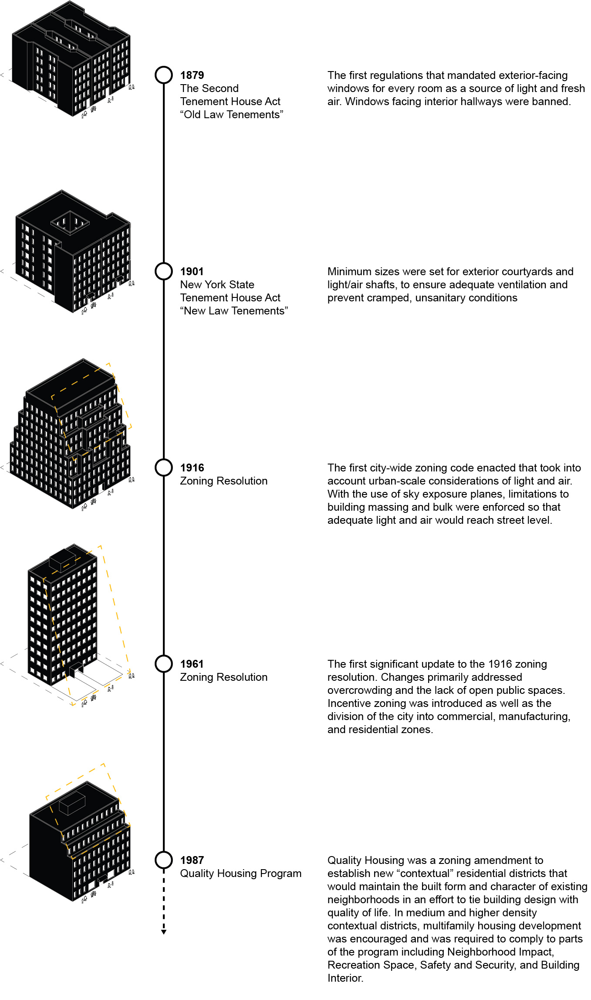

The Housing Lab began in late Fall 2019 by documenting existing New York City New Law Tenements built between 1901 to 1930. This included research on the unique conditions that allowed for an efficient construction, including locally produced timber, brick, and cement. Additionally, various typologies and unique building components were explored through extensive 3D modeling of multiple buildings. Finally, the team analyzed publicly available data to make maps and further analyze the conditions of these buildings today.
The New York City "tenement" econmpasses multi-unit building three to seven stories, often built of brick or masonry, and typically marketed to working-class or immigrant New Yorkers. Early tenements, built in the mid-1800s, had severely restricted access to light and air and were frequently overcrowded. To address this, a coalition of reformers redefined the term under the 1901 New York State Tenement House Act, often referred to as the "New Law" tenements. THe law mandated that all rooms have outward facing windows, proper ventilation, and fire safeguards. Today New Law Tenement buildings make up more than half of New York City's residential units and is a part of the distinct identity of the city.
Various new law tenement blocks were explored to determine its efficiency and livability based on dwelling units per acre.
The Bronx
Staten Island
Queens
Since then, new laws have been introduced by the city. Below is a snapshot of the pioneering regulations implemented in New York City's recent history, each of which earmark a progressive movement to improve the quality of housing and building.

For a draft of the living document regarding the Housing Lab's proposal for zoning interventions see here.